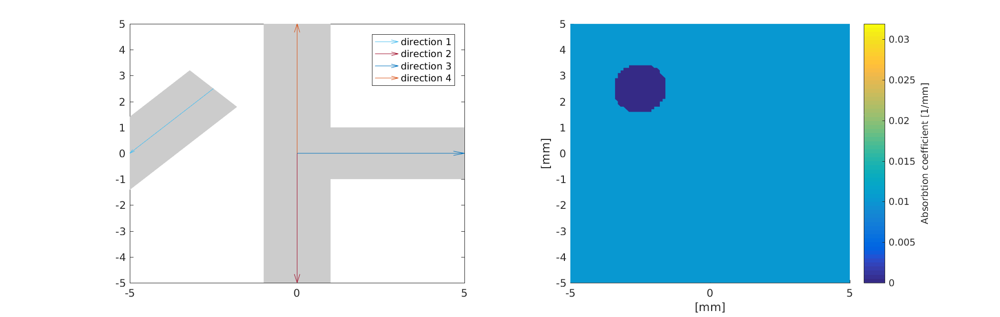

Directing light sources: directingls.m
This example demonstrates how to give custom directions to the light sources and how to use different built-in directivity patterns.
Contents
Set up the mesh and the medium
% A circular region with optical parameters is set up. % Create a rectangular mesh xsize = 10; % width of the region [mm] ysize = 10; % width of the region [mm] dh = 0.1; % discretisation size [mm] vmcmesh = createRectangularMesh(xsize, ysize, dh); % Set constant background coefficients vmcmedium.absorption_coefficient = 0.03; % absorption coefficient [1/mm] vmcmedium.scattering_coefficient = 0.3; % scattering coefficient [1/mm] vmcmedium.scattering_anisotropy = 0.9; % scattering anisotropy parameter [unitless] vmcmedium.refractive_index = 1.3; % refractive index [unitless] % Create arrays of the coefficients vmcmedium = createMedium(vmcmesh, vmcmedium); % Create a rectangle and find the elements inside rectangle_width = 1.9; rectangle_height = 1.9; rectangle_position=[-2.5 2.5]; elements_of_the_rectangle = findElements(vmcmesh, 'rectangle', ... rectangle_position, ... rectangle_width, ... rectangle_height); % Set coefficients of the rectangle vmcmedium.absorption_coefficient(elements_of_the_rectangle) = 0.0; vmcmedium.scattering_anisotropy(elements_of_the_rectangle) = 0.0; vmcmedium.refractive_index(elements_of_the_rectangle) = 1.1;
Find boundary elements on segment(s) of the boundary
% 'createBoundary' forms the boundary structure of the mesh
vmcboundary = createBoundary(vmcmesh);
Function 'findBoundaries' is used to find boundary elements. The lines are demonstrated in the figure below.

line1_start = rectangle_position; line2_start = [0 0]; line3_start = [0 0]; line4_start = [0 0]; line1_end = [-xsize/2 0]; line2_end = [0 -xsize/2]; line3_end = [xsize/2 0]; line4_end = [0 xsize/2]; rectangle_diameter = sqrt(rectangle_width^2+rectangle_height^2); line_width=rectangle_diameter; lightsource1_boundaryelements = findBoundaries(vmcmesh, 'direction', ... line1_start, ... line1_end, ... line_width); lightsource2_boundaryelements = findBoundaries(vmcmesh, 'direction', ... line2_start, ... line2_end, ... line_width); lightsource3_boundaryelements = findBoundaries(vmcmesh, 'direction', ... line3_start, ... line3_end, ... line_width); lightsource4_boundaryelements = findBoundaries(vmcmesh, 'direction', ... line4_start, ... line4_end, ... line_width);
Use different built-in light directivity patterns
% The return value of 'findBoundaries' constains the indices of the % boundary elements found within the line segments. % Four distinct light sources are created. % an inward directed light source vmcboundary.lightsource(lightsource1_boundaryelements) = {'gaussian'}; vmcboundary.lightsource_gaussian_sigma(lightsource1_boundaryelements) = 0.1; % a light source with a cosine shape directivity profile vmcboundary.lightsource(lightsource2_boundaryelements) = {'cosinic'}; vmcboundary.lightsource_direction(lightsource2_boundaryelements,1) = -1; vmcboundary.lightsource_direction(lightsource2_boundaryelements,2) = 1; vmcboundary.lightsource_direction_type(lightsource2_boundaryelements) = {'relative'}; vmcboundary.lightsource(lightsource3_boundaryelements) = {'direct'}; % a light source with an equal irradiance to all (inward) directions vmcboundary.lightsource(lightsource4_boundaryelements) = {'isotropic'};
Directing the light sources
% The difference between 'absolute' and 'relative' direction type % is demonstrated below. % Here the 'absolute' direction type is used. This means that the direction is % given in the position coordinates. To direct the light source % towards the rectangle, the vector that was used to obtain line % segments from the boundary is reversed (see the figure above) and % used as a direction vmcboundary.lightsource_direction_type(lightsource1_boundaryelements) = {'absolute'}; absolute_direction = line1_start-line1_end; vmcboundary.lightsource_direction(lightsource1_boundaryelements,1) = absolute_direction(1); vmcboundary.lightsource_direction(lightsource1_boundaryelements,2) = absolute_direction(2); % The 'relative' direction type is used here. The third light source is tilted % by angle alpha relative to the normal. The angle is calculated from % simple geometric considerations to direct it towards the rectangle vmcboundary.lightsource_direction_type(lightsource3_boundaryelements) = {'relative'}; % lightsource 3 is located at line3_end. The angle to tilt it so % that it is directed towards the rectangle is calculated using a vector % that goes from the lightsource to the rectangle lightsource_to_rectangle = rectangle_position - line3_end; alpha = tan(lightsource_to_rectangle(2)/lightsource_to_rectangle(1)); vmcboundary.lightsource_direction(lightsource3_boundaryelements,1) = sin(alpha); vmcboundary.lightsource_direction(lightsource3_boundaryelements,2) = cos(alpha);
Run the Monte Carlo simulation
solution = ValoMC(vmcmesh, vmcmedium, vmcboundary);
Initializing MC2D using 16 threads... Computing... ...done Done
Plot the solution
hold on; patch('Faces',vmcmesh.H,'Vertices',vmcmesh.r,'FaceVertexCData', solution.element_fluence, 'FaceColor', 'flat','EdgeColor','none'); xlabel('[mm]'); ylabel('[mm]'); c = colorbar; % create a colorbar c.Label.String = 'Fluence [J/mm^2]'; hold off